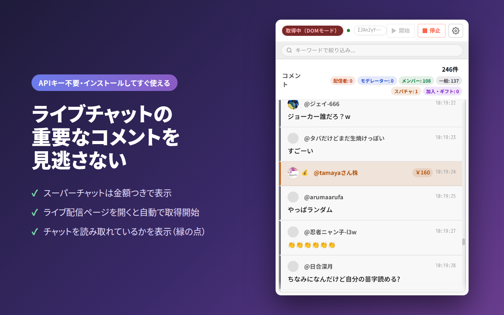
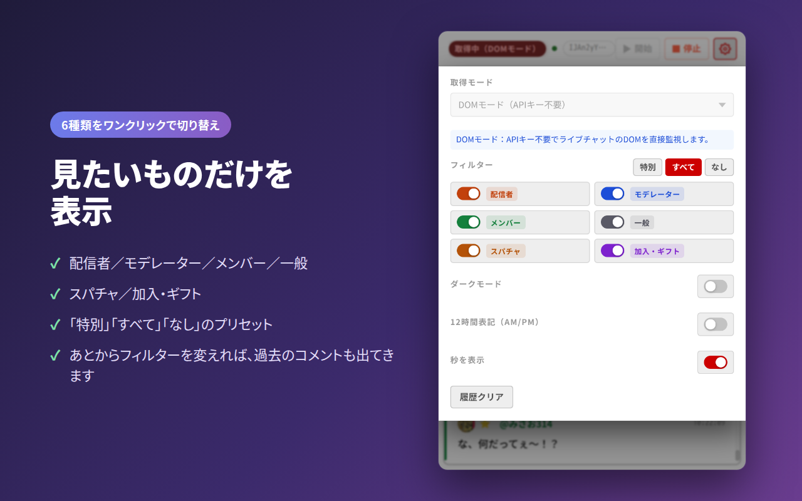
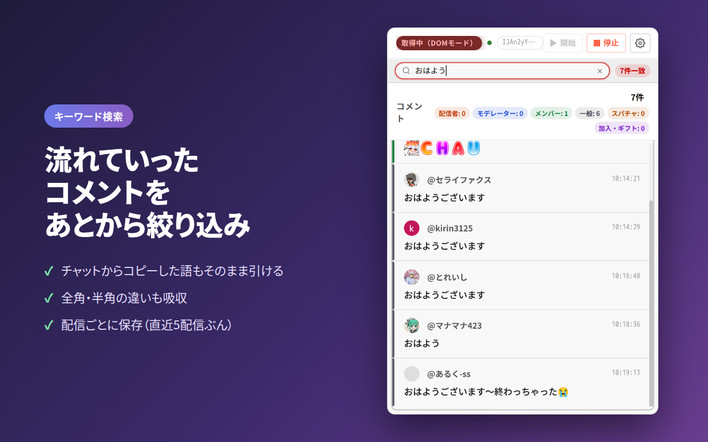
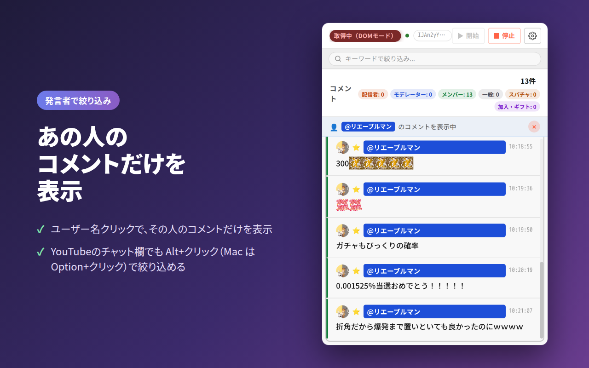
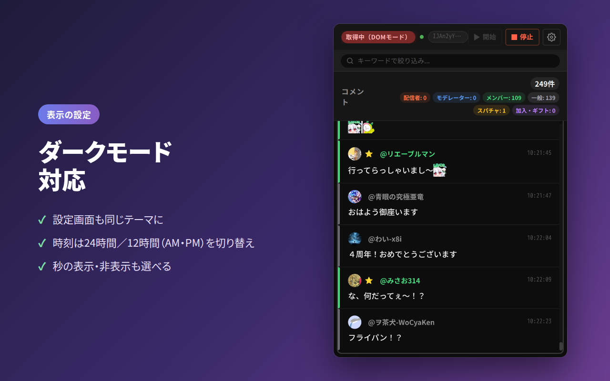

推しの返事、
もう流れた…！？
YouTubeライブチャットから、配信者・モデレーター・メンバーのコメントと スーパーチャット・メンバー加入だけを取り出して一覧表示するChrome拡張機能です。 大事なコメントを、もう見逃しません。
Chrome ウェブストアで配布中 ／ 日本語・英語対応

1分でわかる使い方
インストールして配信を開くだけ。実際の画面で見てみてください。
ライブチャット、こんなことありませんか？
盛り上がる配信ほど、コメントは一瞬で流れていきます。
-
配信者がチャットで返事をくれたのに、気づいたときにはもう画面の外。
-
モデレーターの大事なお知らせ（URLや予定）が、一般のコメントに埋もれて読めない。
-
スパチャやメンバー加入をあとから振り返りたいのに、遡るのが大変。
チャットを6種類に分けて、
見たいものだけを表示
「誰の発言か」と「何のメッセージか」を別々に切り替えられます。 スパチャは一般の視聴者からも飛んでくるので、役割だけで絞っても取りこぼしません。
- 配信者
配信者本人からの直接のメッセージ
- モデレーター
チャンネル管理者からのお知らせや連絡
- メンバー
メンバーシップでチャンネルを支えるファンの声
- 一般
そのほかすべての視聴者のコメント
- スパチャ
スーパーチャットとスーパーステッカー。金額つき、ステッカーは画像で
- 加入・ギフト
新規加入・継続（マイルストーン）・メンバーシップギフト
フィルターを変えると、
過去のコメントも出てくる
取り込みは常に全件。フィルターは表示を切り替えるだけなので、 「やっぱり一般コメントも見たい」と思ったときに、それまで隠れていた分もまとめて出てきます。 「特別」「すべて」「なし」のプリセットでワンクリック切り替え。

流れていったコメントも、
キーワードで探せる
取得したコメント全件をキーワード検索。チャットからコピーした語や、 全角・半角の違い、見えない文字が混ざっていてもそのまま引けます。ヒット件数も表示。

気になる人のコメントだけを
追いかける
ポップアップで名前をクリックすると、その人の発言だけに絞り込み。 YouTubeのチャット欄でも、名前やアイコンを Alt＋クリック（Macは Option＋クリック）すると、 その人で絞り込んだ状態でポップアップが開きます。

夜の配信でもまぶしくない
ダークモード
ポップアップも設定画面もダークテーマに対応。 時刻表示は24時間／12時間、秒のあり・なしも選べます。

ほかにも、こんなことができます
配信を見る人にも、配信する人にも。
- 取得を始めた時点でチャット欄に残っている過去のコメントもまとめて取り込み
- ライブ配信ページを開くと自動で取得開始
- スーパーステッカーやメンバー限定絵文字も、チャット欄と同じ画像で表示
- 役割・種別ごとの件数バッジ。スパチャや加入が何件あったかがひと目でわかる
- 配信ごとにコメントを保存。ポップアップを閉じても消えない（直近5配信ぶん）
- チャットを読み取れているかを表示（緑の点）
- 数千件たまってもスクロールと検索が軽いまま
- 表示言語は日本語と英語。ブラウザに合わせて自動で切り替え
使い方はかんたん3ステップ
面倒な設定はいりません。
Chromeに追加
Chrome ウェブストアから無料でインストール。
ライブ配信を開く
YouTubeのライブ配信ページを開くと、自動でコメントの取得が始まります。
アイコンをクリック
ツールバーのアイコンを押すと、大事なコメントだけが並んでいます。
💡 自動で始まらないときは、ポップアップの「開始」ボタンを押してください。 YouTube Data API v3 を使うモードを選ぶ場合だけ、設定画面でAPIキーの登録が必要です。
安心して使えるように
必要最小限の権限だけで動きます。
🔒 データは手元だけ
コメントはすべてお使いのブラウザの中に保存され、どこへも送信しません。
👀 読むのはライブチャットだけ
ほかのタブのURLやタイトルは見ません。外部への通信はAPIモードのときの YouTube Data API v3 だけです。
🆓 無料・オープンソース
ソースコードは GitHub で公開しています。誰でも中身を確かめられます。
よくある質問
お金はかかりますか？
かかりません。すべての機能を無料で使えます。
APIキーは必要ですか？
いりません。既定の「DOMモード」はページのチャットを直接読み取るので、インストールしてすぐ使えます。 YouTube Data API v3 を使う「APIモード」を選んだときだけ、APIキーの登録が必要です。
名前をクリックすると YouTube のメニューが開かないのですか？
普通のクリックは YouTube の「ブロック」「報告」メニューのままです。絞り込みは Alt（Macは Option）を押しながらクリックしたときだけ働きます。
どのブラウザで使えますか？
Google Chrome 向けの拡張機能です。Chrome ウェブストアの拡張機能に対応した Chromium 系ブラウザでも動く場合があります。